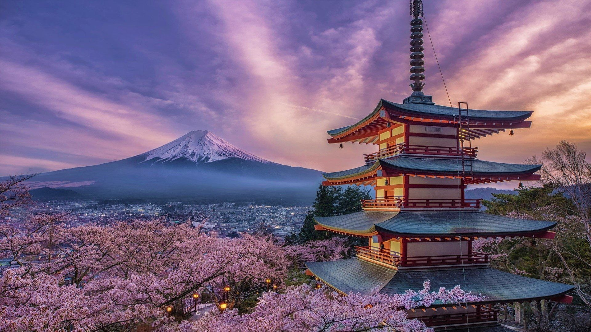
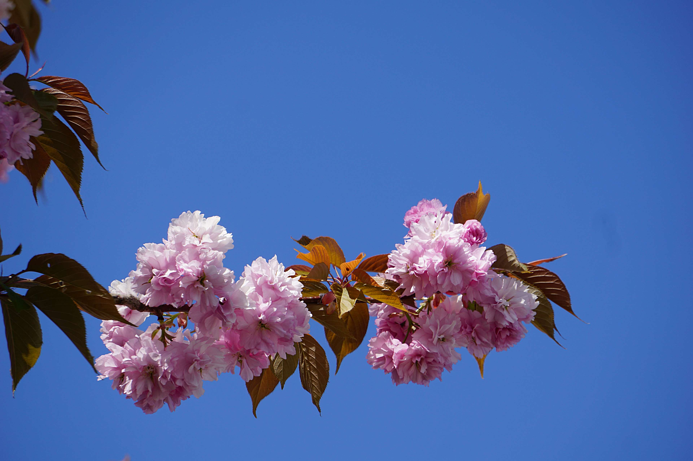

Ces cerisiers en fleur appelés « sakura » en japonais suscitent une véritable fascination chez les Japonais Les sakura sont les cerisiers ornementaux du Japon (dont Prunus serrulata) ainsi que leurs fleurs. La cerise vient d'une autre espèce de Prunus
Les sakura tiennent une place de première importance dans la plupart des jardins japonais et des parcs publics, écoles et bâtiments publics japonais. Comme les années fiscales et scolaires commencent toutes les deux en avril, le jour de la rentrée des classes coïncide avec la saison des cerisiers dans la plus grande partie de l'île de Honshū
